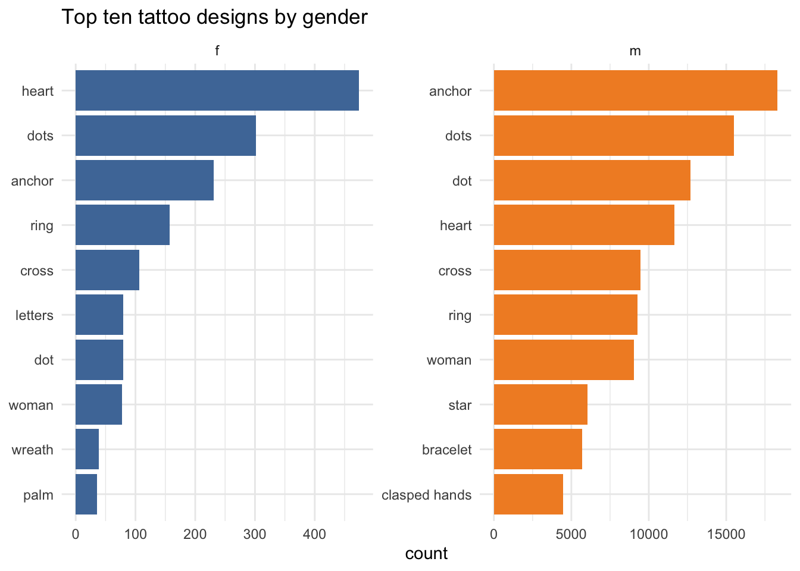
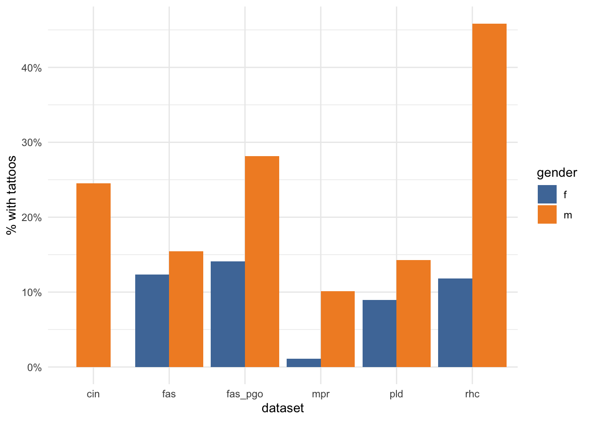

library(tidyverse)
library(scales)
library(tidytext)
library(ggthemes)
theme_set(theme_minimal())
descriptions_data <-
read_csv(here::here("_data", "convict_descriptions.2020-12-17.csv"), guess_max = 100000)
segments_data <-
read_csv(here::here("_data", "body_segments_20210327.csv"), guess_max=100000)Come TogetheR: Combining data tables in R with dplyr join verbs
Introduction
Combining or joining data tables using a shared key (or ID) column is crucial for working with many kinds of datasets, but is not often well understood by historians.
This is unfortunate, because many historical sources are too complex to fit comfortably into simple “rectangular” formats like spreadsheets. They contain what are known as “one-to-many” or even “many-to-many” relationships. An example of this from the Old Bailey Proceedings is that one trial (the main unit in the database) can contain
- many defendants
- many offences
- many verdicts
- many sentences
But a tabular data format can only easily handle “one-to-one” relationships: one trial would have just one defendant, one offence, one verdict and one sentence.
There are a couple of workarounds commonly used when entering data like this into a spreadsheet: you might put multiple items in one column, or add extra numbered columns (eg “offence_1”, “offence_2”, etc). The latter soon gets unwieldy if you need more than a couple of columns, and it’s difficult to analyse a variable that’s been spread across several different columns. The first approach can also be clumsy and is definitely not “tidy”, resulting in a mixed-up bag of things in a single column (my previous post on tidying data showed a way to deal with that problem).
A common approach to storing more complex data like this is to use a relational database with several linked tables. The two data tables in the tattoos database are linked in this way, with a one-to-many relationship between the two data tables: the descriptions are the main unit of data, but the body segments data can contain several segments per description. However, in this case, a decision was made to duplicate much of the descriptions table information (mostly biographical) in the segments table, which largely removes any need for joins.
But the downside is that all the duplicated information in the segments table takes up a lot of space and slows down importing data. I found this annoying, so I created a substantially slimmed-down version of the segments table by removing most of the description-level information that’s duplicated in the descriptions table. This reduced a 310 MB file to 87 MB! Then I use joins as and when I actually need data from both tables in an analysis. I’ll be using my skinny version of the data in examples in this post.
Combining data
There are in fact a number of different ways of combining data tables, horizontally or vertically. In R, one of them is more often known as “binding”, by rows or columns. A common use for {dplyr’s} bind_rows() function, which simply adds one table to the bottom of another table, is where collection of the same (or very similar) data source was split into separate tables.
To combine two tables side-by-side, the equivalent is bind_cols(). But this can only be used where the two tables have exactly the same number of rows, and you have to be sure that your two tables are an exactly matching pair, with the rows on each side of the pair in the same order.
“Joining” as defined here also combines two tables side-by-side. But other than that, it works quite differently. Unlike bind_cols(), the order of the rows in each table doesn’t matter, and they don’t even need to have the same number of rows. But they do have to contain at least one shared “key”.
A key is a variable (or set of variables) that uniquely identifies an observation.
The data
First, I’ll load the R packages I need and the two data files, the original descriptions and the slimmed-down segments. (For more info about the dataset, see the introductory post.) The skinny segments data is available here.
For convenience, let’s make a couple of smaller subsets of the two tables. The shared key is the ID column subrecordid.
I’ll keep all the rows from segments, but only the body and designs columns.
segments <-
segments_data %>%
select(subrecordid, body, designs)
segments# A tibble: 564,703 × 3
subrecordid body designs
<chr> <chr> <chr>
1 cin77589 right arm Man and woman|stars|dog
2 cin77589 left arm half|moon|stars|anchor|heart|diamond
3 cin77590 right arm <NA>
4 cin77590 right hand <NA>
5 cin77591 corner|left|eyebrow <NA>
6 cin77592 right arm anchor
7 cin77592 <NA> <NA>
8 cin77593 left hand <NA>
9 cin77594 neck <NA>
10 cin77595 corner|right eye <NA>
# … with 564,693 more rowsFrom descriptions, however, I’ll keep only those that contain tattoos, and the gender and year of birth columns.
descriptions <-
descriptions_data %>%
filter(hastattoo=="y") %>%
select(subrecordid, gender, born)
descriptions# A tibble: 75,448 × 3
subrecordid gender born
<chr> <chr> <dbl>
1 cin77589 m 1814
2 cin77590 m 1820
3 cin77592 m 1820
4 cin77598 m 1824
5 cin77603 m 1792
6 cin77604 m 1814
7 cin77609 m 1830
8 cin77614 m 1815
9 cin77616 m 1815
10 cin77619 m 1820
# … with 75,438 more rowsJoining with dplyr
The {dplyr} package provides a range of *_join verbs/functions for joining tables (which are quite similar to SQL joins, for anyone coming from SQL). In this post, I’ll look at four that I use most often.
In the following examples, you should think of segments as the left hand side and descriptions as the right hand side of the joins.
(NB that dplyr documentation refers to the right hand side as “x” and the left as “y”. R error messages - eg if you try to join on a non-existent key - will refer to “LHS” and “RHS”.)
inner_join and left_join
These two are examples of what the dplyr docs refer to as mutating joins, because they create new data tables.
First up, inner_join(): this means that only rows in segments that have a matching subrecordid in descriptions are returned. The columns in descriptions are appended on the right. So I now have 5 columns but only 269205 rows, instead of the original 564703. Note how the information from descriptions is repeated where it has multiple matches in segments.
segments %>%
inner_join(descriptions, by="subrecordid")# A tibble: 269,205 × 5
subrecordid body designs gender born
<chr> <chr> <chr> <chr> <dbl>
1 cin77589 right arm Man and woman|stars|dog m 1814
2 cin77589 left arm half|moon|stars|anchor|heart|diamond m 1814
3 cin77590 right arm <NA> m 1820
4 cin77590 right hand <NA> m 1820
5 cin77592 right arm anchor m 1820
6 cin77592 <NA> <NA> m 1820
7 cin77598 left arm <NA> m 1824
8 cin77603 right|shoulder Crucifix m 1792
9 cin77603 right arm man and woman m 1792
10 cin77603 right arm <NA> m 1792
# … with 269,195 more rowsUsing left_join(), however, all the rows in segments are returned. Where there isn’t a matching subrecordid in descriptions, the right hand columns will be empty. It’s useful because sometimes you’ll want to keep the whole of the left-hand data after the join, for example to make calculations or checks based on the presence or absence of the right hand data.
segments %>%
left_join(descriptions, by="subrecordid")# A tibble: 564,703 × 5
subrecordid body designs gender born
<chr> <chr> <chr> <chr> <dbl>
1 cin77589 right arm Man and woman|stars|dog m 1814
2 cin77589 left arm half|moon|stars|anchor|heart|di… m 1814
3 cin77590 right arm <NA> m 1820
4 cin77590 right hand <NA> m 1820
5 cin77591 corner|left|eyebrow <NA> <NA> NA
6 cin77592 right arm anchor m 1820
7 cin77592 <NA> <NA> m 1820
8 cin77593 left hand <NA> <NA> NA
9 cin77594 neck <NA> <NA> NA
10 cin77595 corner|right eye <NA> <NA> NA
# … with 564,693 more rowsanti_join and semi_join
These are called “filtering” joins. They don’t add the right-hand columns to the results. As the term suggests, they work in effect as filters, but instead of using criteria within the table you’re actually working on, the filtering behaviour is based on data in another table.
I use anti_join() a lot: it returns the rows in the left-hand table that don’t have a match in the right-hand table. Apart from using it as a filter, it’s often really important when you’re checking and cleaning data - for example, for finding errors or inconsistencies in references that you need to use as keys.
segments %>%
anti_join(descriptions, by="subrecordid")# A tibble: 295,498 × 3
subrecordid body designs
<chr> <chr> <chr>
1 cin77591 corner|left|eyebrow <NA>
2 cin77593 left hand <NA>
3 cin77594 neck <NA>
4 cin77595 corner|right eye <NA>
5 cin77595 chin <NA>
6 cin77595 inside|right|ear <NA>
7 cin77596 top|forehead <NA>
8 cin77596 over|right eye <NA>
9 cin77597 left cheek <NA>
10 cin77597 bone <NA>
# … with 295,488 more rowsThe second filtering join is semi_join(); it works like inner_join in that it returns only the left-hand rows that have a match on the right-hand side, but as with anti-join, it doesn’t append the right hand columns. You might wonder, what’s the point of that? But it’s faster and slightly easier if you simply want to use the join as a filter and don’t need any of the information in the right hand table.
segments %>%
semi_join(descriptions, by="subrecordid")# A tibble: 269,205 × 3
subrecordid body designs
<chr> <chr> <chr>
1 cin77589 right arm Man and woman|stars|dog
2 cin77589 left arm half|moon|stars|anchor|heart|diamond
3 cin77590 right arm <NA>
4 cin77590 right hand <NA>
5 cin77592 right arm anchor
6 cin77592 <NA> <NA>
7 cin77598 left arm <NA>
8 cin77603 right|shoulder Crucifix
9 cin77603 right arm man and woman
10 cin77603 right arm <NA>
# … with 269,195 more rowsdo stuff inside the join function
Because of the way that tidyverse “pipes” work, you can manipulate the right-hand table inside the join. Let’s say I’d like to look at only descriptions in the Register of Habitual Criminals dataset: I can do the filter before applying the join.
segments %>%
inner_join(descriptions_data %>%
filter(dataset=="rhc") %>%
select(subrecordid, gender), by="subrecordid")# A tibble: 450,109 × 4
subrecordid body designs gender
<chr> <chr> <chr> <chr>
1 rhc1 right|nose <NA> f
2 rhc10 eyes <NA> m
3 rhc100 back|head <NA> m
4 rhc100 bottom|stomach <NA> m
5 rhc100 right|neck <NA> m
6 rhc100 forehead <NA> m
7 rhc100 right hand <NA> m
8 rhc100 thigh <NA> m
9 rhc100 nose <NA> m
10 rhc100 left|thigh <NA> m
# … with 450,099 more rowsusing multiple variables as a key
Sometimes you need to join on more than one variable to ensure that your key is unique. In this case you have to combine the multiple keys in the by=“” argument into a vector using c() (c("key1", "key2", "etc")).
(It doesn’t actually make any difference in this example; it’s just a demonstration. But it will matter in the following example.)
segments_data %>%
select(subrecordid, life_id, body) %>%
inner_join(descriptions_data %>%
filter(hastattoo=="y") %>%
select(subrecordid, life_id, gender),
by=c("subrecordid", "life_id"))# A tibble: 269,205 × 4
subrecordid life_id body gender
<chr> <chr> <chr> <chr>
1 cin77589 cin77589 right arm m
2 cin77589 cin77589 left arm m
3 cin77590 cin77590 right arm m
4 cin77590 cin77590 right hand m
5 cin77592 cin77592 right arm m
6 cin77592 cin77592 <NA> m
7 cin77598 cin77598 left arm m
8 cin77603 cin77603 right|shoulder m
9 cin77603 cin77603 right arm m
10 cin77603 cin77603 right arm m
# … with 269,195 more rowsjoining summarised data
So far all these joins have involved joining single data points using an ID column. But that’s not your only option. You might, for example, join already summarised data on a shared categorical key.
Let’s get counts of gender for descriptions with tattoos, per dataset.
descriptions_gender_dataset_summary <-
descriptions_data %>%
filter(hastattoo=="y", dataset!="hcr", gender %in% c("m", "f")) %>%
count(dataset, gender, name="n_tattoos")
descriptions_gender_dataset_summary# A tibble: 11 × 3
dataset gender n_tattoos
<chr> <chr> <int>
1 cin m 2381
2 fas f 1687
3 fas m 9742
4 fas_pgo f 331
5 fas_pgo m 2321
6 mpr f 3
7 mpr m 65
8 pld f 79
9 rhc f 1535
10 rhc m 56396
11 tlm m 894I want to compare the numbers that have tattoos with all descriptions, and one way I can do this is with a join.
descriptions_gender_dataset_summary %>%
inner_join(
# counting inside the join
descriptions_data %>%
filter(dataset!="hcr", gender %in% c("m", "f")) %>%
count(dataset, gender, name="n_descriptions"),
# join on both dataset *and* gender, or bad things will happen
by=c("dataset", "gender")
) %>%
mutate(percent = n_tattoos/n_descriptions*100)# A tibble: 11 × 5
dataset gender n_tattoos n_descriptions percent
<chr> <chr> <int> <int> <dbl>
1 cin m 2381 9719 24.5
2 fas f 1687 13677 12.3
3 fas m 9742 63151 15.4
4 fas_pgo f 331 2347 14.1
5 fas_pgo m 2321 8236 28.2
6 mpr f 3 270 1.11
7 mpr m 65 643 10.1
8 pld f 79 882 8.96
9 rhc f 1535 12969 11.8
10 rhc m 56396 123005 45.8
11 tlm m 894 6267 14.3 Now what?
As in the last post, after joining I need to tidy designs onto separate lines…
segments_joined <-
segments %>%
inner_join(descriptions, by="subrecordid") %>%
filter(!is.na(designs)) %>%
unnest_tokens(design, designs, token="regex", pattern="\\|")
segments_joined# A tibble: 196,978 × 5
subrecordid body gender born design
<chr> <chr> <chr> <dbl> <chr>
1 cin77589 right arm m 1814 man and woman
2 cin77589 right arm m 1814 stars
3 cin77589 right arm m 1814 dog
4 cin77589 left arm m 1814 half
5 cin77589 left arm m 1814 moon
6 cin77589 left arm m 1814 stars
7 cin77589 left arm m 1814 anchor
8 cin77589 left arm m 1814 heart
9 cin77589 left arm m 1814 diamond
10 cin77592 right arm m 1820 anchor
# … with 196,968 more rowsNow I can compare gendered differences in the most popular tattoo designs. (With a few issues: “letters” is probably not a design.)
segments_joined %>%
count(design, gender, sort=TRUE) %>%
group_by(gender) %>%
top_n(10, n) %>%
ungroup() %>%
mutate(design = reorder_within(design, n, gender)) %>%
ggplot(aes(x=design, y=n, fill=gender)) +
geom_col(show.legend = FALSE) +
coord_flip() +
scale_x_reordered() +
scale_fill_tableau() +
facet_wrap(~gender, scales = "free") +
labs(y="count", x=NULL, title="Top ten tattoo designs by gender")
And there are some striking variations in the proportions of male/female descriptions that have tattoos between different datasets.
descriptions_gender_dataset_summary %>%
inner_join(
descriptions_data %>%
filter(dataset!="hcr", gender %in% c("m", "f")) %>%
count(dataset, gender, name="n_descriptions"),
by=c("dataset", "gender")
) %>%
mutate(percent = n_tattoos/n_descriptions) %>%
mutate(dataset = case_when(
dataset %in% c("pld", "tlm") ~ "pld",
TRUE ~ dataset
)) %>%
ggplot(aes(x=dataset, y=percent, fill=gender)) +
geom_col(position = position_dodge2(preserve = "single", padding = 0)) +
scale_y_continuous(labels = percent_format()) +
scale_fill_tableau() +
labs(y="% with tattoos")
Resources
A beginner’s guide to joining data.
Relational data - an essential detailed introduction to {dplyr} joins, by Hadley Wickham.
STAT 545: Join two tables for more examples and exercises.
extending dplyr joins
When using {dplyr} joins, your key has to be an exact match. But sometimes you’ll find that what you want is a join function that allows for inexact matches. The fuzzyjoin package does just that, but uses the same basic format as the joins above. It includes, for example, joins on numeric values, similar strings, regular expressions, and overlapping intervals.
Another more specialised join package is funneljoin which may be useful where you want to analyse a sequence of events (eg, “maybe you’re interested in finding the people who visit a page and then register”). [NB: I haven’t tried this one yet.]